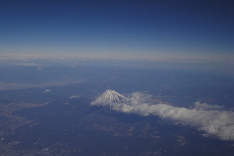

みんな元気ですか
しばらくインドに行っていて 日本に帰ってきました
地震 津波 原発の NEWS は インドで聞きました
ことの重大さを知り しばらくただ唖然とするばかりでした
MEENA’s Diary
2011/04/08


31 .1 . 2011


どうか この大きな悲しみの出来事が
人類の歴史を転換する大きな鍵となり
人の心や自然の秩序を無視した経済中心の世界に終止符を打ち
愛と調和の世界の幕開けと成りますように
傷ついた体 傷ついた心 破壊された自然が癒され
すべての魂が癒され 皆 歓びの光につつまれますように
わたしたちは皆兄弟です
地球はわたしたちのお母さんです
すべては愛の中で起こっています
身体の中にあってもなくても 魂は不滅です
残されたものはつらいけれど
みんなで頑張って乗り越えましょう
どうか すべて 大丈夫となりますように
すべての魂が 歓びの光となりますように
I believe Big LOVE
everything is gonna be GOOD
この富士山の写真は インドに向かう飛行機の中で撮りました
何度も飛行機に乗っているけれども
こんなにクリアで綺麗な富士山を 空から見たのは初めてです
不思議なくらい綺麗でした
そして雲が白い龍にみえました
きっと だいじょうぶ きっと だいじょうぶ
みんな だいじょうぶ